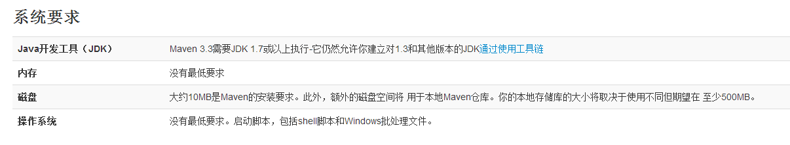

Windows中安装Maven
Maven是一个项目管理的Java 工具，在JavaEE中，我们可以使用Maven方便地管理团队合作的项目，现在我们在学习JavaEE框架，使用Maven可以管理类库，有效方便地供团队中的其他人员使用。
一、下载 Maven 。
请访问Maven的下载页面 官网下载，其中包含针对不同平台的各种版本的Maven下载文件。
注意：


我这里下载的是：apache-maven-3.3.9-bin.zip 版本。
二、解压 maven 压缩包。
解压apache-maven-3.1.1-bin.zip，并把解压后的文件夹下的apache-maven-3.1.1文件夹移动到E:\Maven 下，如果没有Maven 这个文件夹的话，请自行创建。

三、配置maven 的环境变量
右键“计算机”，选择“属性”，之后点击“高级系统设置”，点击“环境变量”，来设置环境变量，有以下系统变量需要配置：
新建系统变量 MAVEN_HOME 变量值：E:\Maven\apache-maven-3.3.9
编辑系统变量 Path 添加变量值： ;%MAVEN_HOME%\bin


注意：注意多个值之间需要有分号隔开，然后点击确定。
四、检测是否安装成功。
最后检验配置是否成功：用win键+R，来打开命令行提示符窗口，即Dos界面，输入mvn --version 若出现以下情况说明配置成功

或是输入：echo %M2_HOME%
查看版本：mvn -v

五、升级。
Maven还比较年轻，更新比较频繁，因此用户往往会需要更新Maven安装以获得更多更酷的新特性，以及避免一些旧的bu
只需要按照上面的配置过程换成新的包即可。